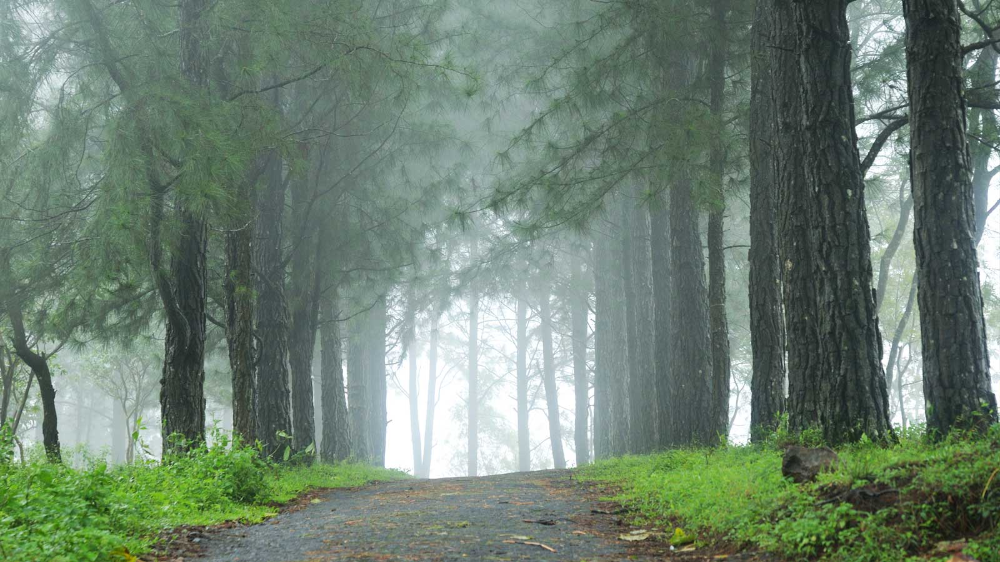

Idukki, a landlocked district of Kerala, is one of the most nature-rich areas in Kerala with more than half of the area covered with forest. This rugged hill resort is known for its wildlife sanctuaries, beautiful bungalows, tea factories, rubber plantations and forests.
Idukki's speciality lies in 650 feet long and 550 feet high arch dam across the Kuravan Kurathi mountain, which is the largest in the country. Anamudi, which is the highest peak in India, south of the Himalayas, is also located in Idukki. Idukki is one of the districts in the state that has abundant scope for promotion of eco-tourism if proper infrastructure and promotional activities are provided.
The Idukki Arch dam is known as the first in Asia and the world’s second largest arch dam spreading over a height of 550ft. The dam was built over the Periyar River and between two mountains. The dam generates a lot of the electricity of the entire state. Tourists must visit this monumental dam that has gathered worldwide praise and applaud.
The Idukki Wildlife Sanctuary is spread over 77 sq.km and has a reservoir formed by three dams namely, Cheruthoni, Idukki and Kulamanu. The sanctuary is home to a variety of endangered flora and fauna including the famous elephants of Kerala. The sanctuary is a must visit for travellers wanting to see nature as its best.

Munnar is a hill station in the state of Kerala. Located in the Western Ghats at a height of 1600 metres, Munnar is famous for its tea estates, greenery, blankets of mist forming natural-view points.Munnar is divided into Old Munnar, where the tourist information office is, and Munnar, where the bus station and most guest houses are located. The Eravikulam National Park, Salim Ali Bird Sanctuary and tea plantations are its major attractions.